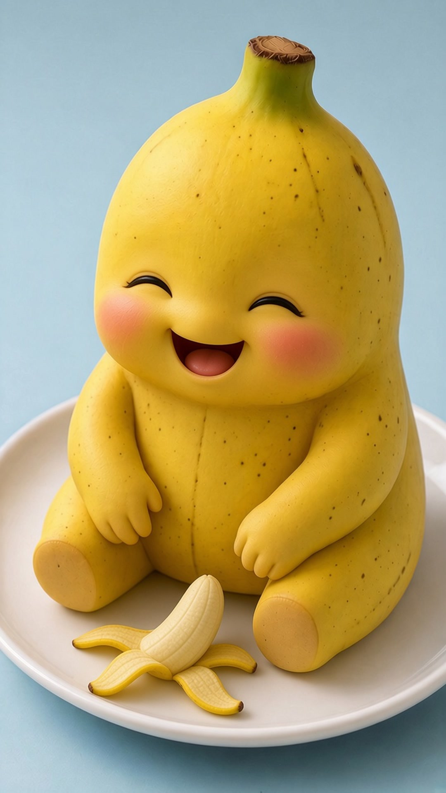
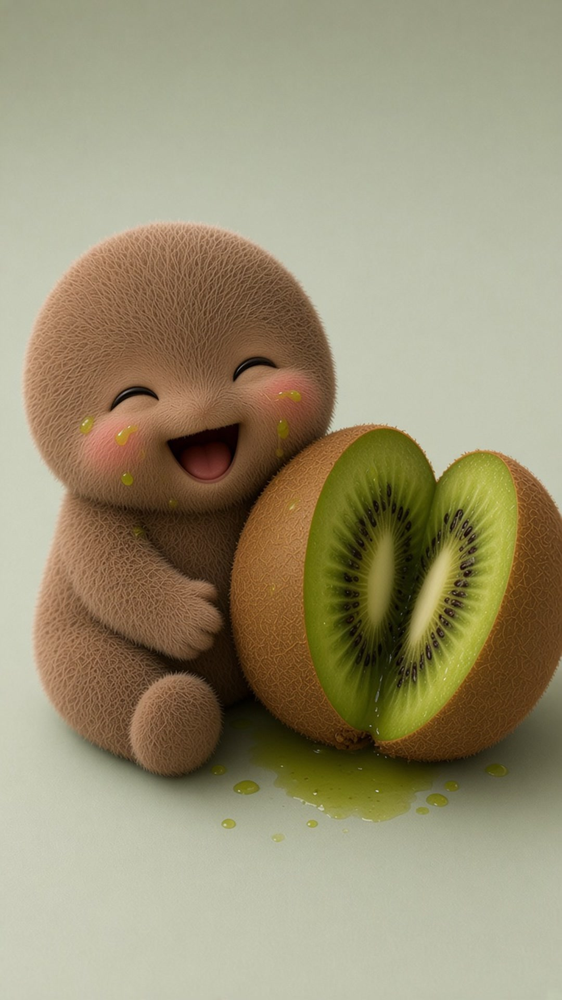
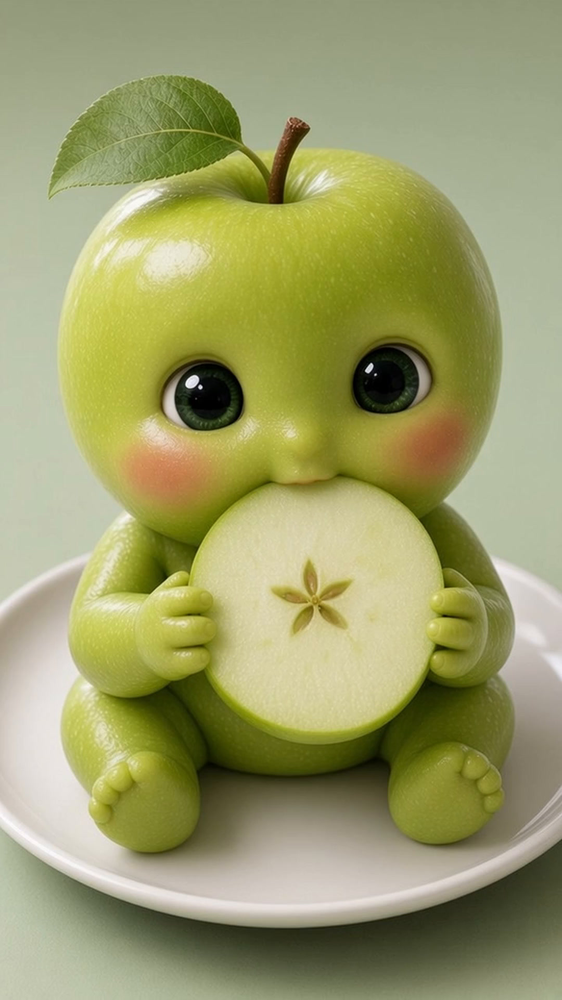

Platanín
El plátano más curioso de la casa. Todo le sorprende.
Frutas con mucha personalidad, sonidos que dan gustito y cero dramas… casi.
Míralos en TikTok
El plátano más curioso de la casa. Todo le sorprende.

Peludito, achuchable y con mucho peligro. Si aprieta, revienta.

Dulce, crujiente y un poco dramática. Que no le quiten su rodaja.